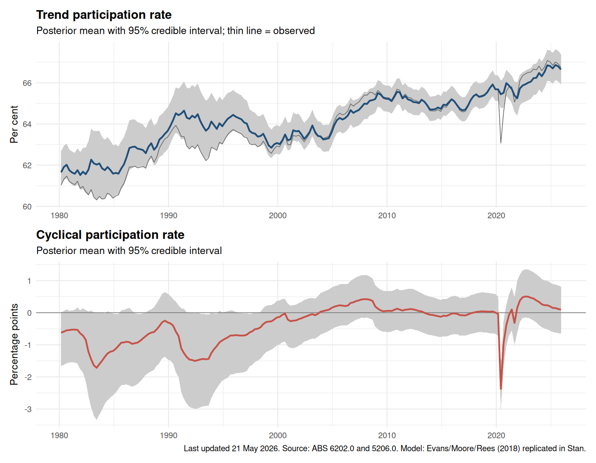

Bayesian unobserved-components model in Stan, refreshed automatically when the ABS releases new Labour Force data.

The model jointly decomposes log real GDP per capita, the unemployment rate and the participation rate into a common AR(2) cycle and three random-walk trends, with a covariance regime change at 1983Q4 (the Australian dollar float). It replicates the EViews state-space model of Evans, Moore & Rees (2018, RBA Bulletin) in Stan, with weakly informative priors and HMC for posterior sampling.